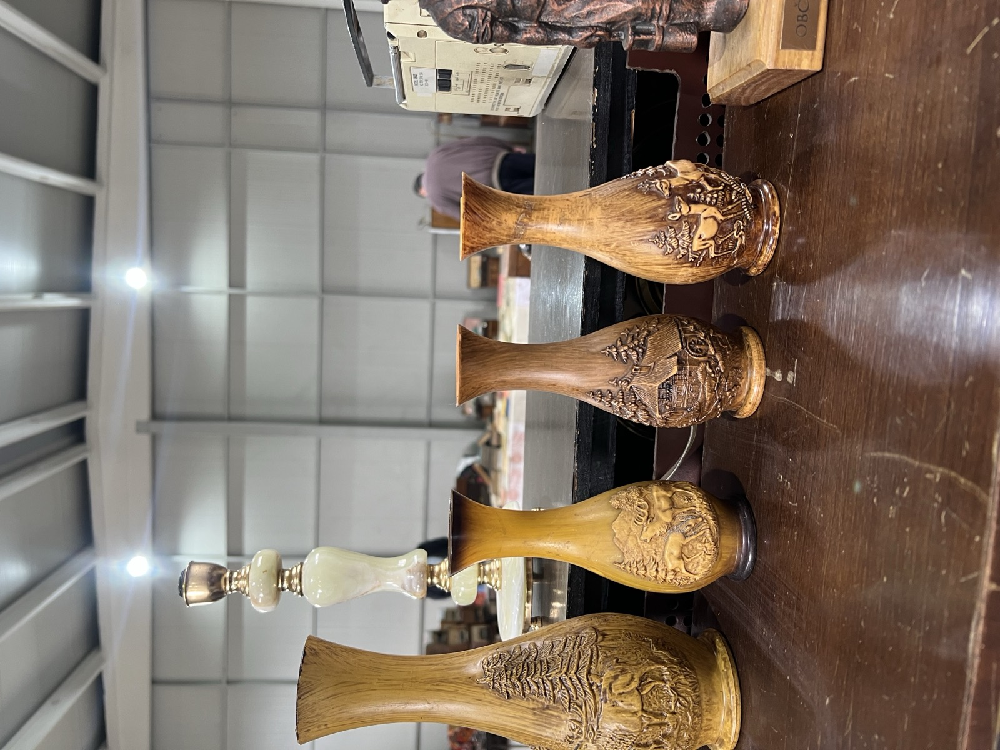
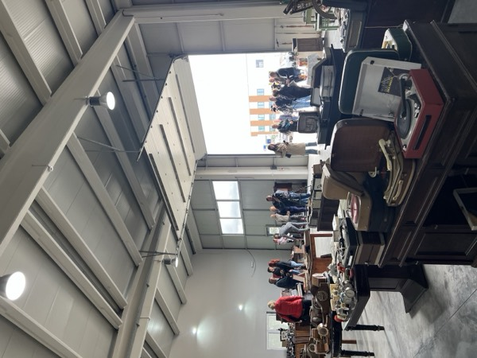
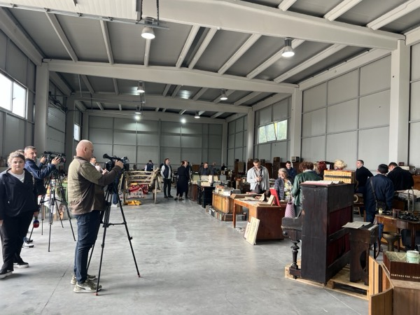
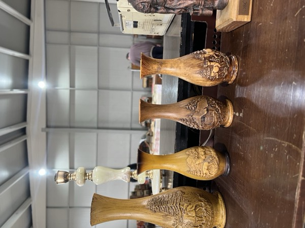

Antikviteti i seosko nasljeđe
Izložbe i arhiv čuvaju predmete, priče i sjećanja seoskog domaćinstva — od kuhinjskog namještaja i tekstila, do starih telefona, knjiga i alata.
Otvorena nova etno izložba
25. septembar 2026.
Danas je u Bijeljini svečano otvorena nova etno izložba koja predstavlja predmete, priče i uspomene vezane za život i svakodnevicu nekadašnjeg seoskog domaćinstva.
Kroz sačuvane predmete i zbirke, izložba čuva dio materijalnog i kulturnog nasljeđa Semberije i približava posjetiocima način života, rada i običaja prethodnih generacija.



Tradicija, običaji i seosko nasljeđe
Udruženje poljoprivrednih proizvođača okuplja ljude koji čuvaju predmete, priče i uspomene iz života u Bosansko-hercegovačkim selima.
Udruženje je osnovano sa primarnim ciljem očuvanja tradicije, običaja i života na području stare Jugoslavije, a prvenstveno sa područja Bosansko-hercegovačkih sela. Članovi udruženja su i prije osnivanja aktivno radili na sakupljanju predmeta i stvari iz naše prošlosti. U kolekciji se nalazi veliki broj starih mašina, alata, oruđa i predmeta koji su vezani za obradu zemlje. Očuvanje starih zanata, rukotvorina i proizvoda iz zanatskih djelatnosti koji su važni za selo, takođe se nalaze u ovoj kolekciji.
Više stotina knjiga, tekstila i odjeće, zavidna kolekcija starih radio i TV aparata, bogata kolekcija starog namještaja i ćilima izloženi su na etno izložbi „Srce Semberije - život u prošlosti". Izložba treba da prikaže šta se sve koristilo na našim prostorima krajem 19. i početkom 20. vijeka, koji materijali su se koristili, kako su pravljeni, koliko su trajali i niz drugih pitanja i odgovora daće ova izložba.
Pažljivom posjetiocu izložbe neće promaći koliko je život i rad u prošlosti bio racionalan, efikasan i jednostavan, koliko su svakodnevni predmeti bili od prirodnih materijala, koliki je sklad postojao između života na selu i prirodnog okruženja, i to je samo jedan od ciljeva koje treba da prikaže ova izložba. Posebno želimo da istaknemo da svaki posjetilac obrati pažnju na dizajn, ergonomiju i boje predmeta ali i tekstila kao i odjeće koja se koristila u prošlosti.
Na izložbi je prikazano više od 1.000 eksponata, kojim je obuhvaćen niz segmenata iz prošlosti, kao što su: poljoprivreda, zanatstvo, školstvo, muzika i medicina. Ističemo kolekciju starih pegli, fotoaparata, radio uređaja, satova, knjiga, posuđa, odjeće, ćilima, rukotvorina, ploča, namještaja, pisaćih mašina, lampi i drugog.
Cilj izložbe je da edukuje i informiše posjetioce o prošlosti i da ih podstakne da razmišljaju o vezi između prošlosti i sadašnjosti, ali i da probudi osjećaj i emocije. Udruženje je do sada više puta javno nastupalo na sajmovima i etno smotrama u Republici Srpskoj, a tokom 2025. godine samostalno su organizovali etno izložbu koja je bila postavljena na površini od 400 m² sa takođe zavidnim brojem izloženih predmeta. Izložba je trajala dva mjeseca, a istu je posjetilo preko 10.000 posjetilaca. Internet prezentaciju je pogledalo više od 70.000 posjetilaca.
Posebno su nas obradovali pozitivni komentari izložbe, a ono što ohrabruje jeste činjenica da je na izložbi predstavljen samo dio predmeta koji se nalaze u našoj kolekciji. Zbog uslova, nemogućnosti pravilne obrade predmeta, nepostojanja adekvatnog izložbenog prostora i namještaja, veliki dio predmeta ostao je u magacinu udruženja da se čuva, nadamo se, do sljedeće izložbe. Pozivamo vas da posjetite našu izložbu.

- 30.000+ Eksponata u kolekciji
- 400 m² Površina najveće izložbe
- 10.000+ Posjetilaca izložbe
- 70.000+ Posjeta online
Trenutna izložba u toku
Pogledajte galeriju fotografija sa aktuelne postavke — predmeti, alati, tekstil i lične stvari iz nekadašnjeg seoskog domaćinstva.
Imate predmet, fotografiju ili priču?
Udruženje prikuplja predmete, svjedočanstva i fotografije vezane za seosko domaćinstvo i nasljeđe. Svaki prilog pomaže da se priča izložbe sačuva za buduće generacije.
-
Predmeti
Stari kućni predmeti, namještaj, tekstil, alati i tehničke naprave.
-
Fotografije
Porodične fotografije, razglednice i snimci iz domaćinstva.
-
Priče
Sjećanja, zanatski savjeti i usmena predanja vezana za selo.
Javite se udruženju
Za sve informacije o izložbi, predaji predmeta ili budućim postavkama, pišite ili pozovite udruženje.
- Email perkan66@gmail.com
- Telefon +387 65 512 942
- Mjesto Komitska bb, Bijeljina